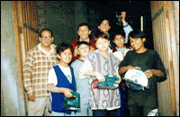

Recipients of grants
Last Updated: July 28, 2017IMF Giving Together seeks opportunities to achieve synergies by combining IMF financial and equipment donations with the work of its employee volunteers. Because a priority of IMF Giving Together is to help improve economic and social conditions in the host city region, where nearly all IMF employees and their families reside, one-half of IMF Giving Together donations are made to local charities. The balance is donated to international nonprofit organizations with records of success in assisting poor families in low-income countries.
The IMF also supports local and international charities by matching at 50% those donations from IMF staff, retirees, and their families during the Annual Giving Campaign.
I. Grants to charities within Metropolitan Washington, DC
- Alexandria Neighborhood Health Services, Inc. (VA) Provides primary and preventive health care, family support services for low-income or uninsured women and children in Alexandria. $5,000 grant.
- Arriba Center (DC) Provides training for independent living to mentally and/or physically disabled individuals of Hispanic and Caribbean ethnicity. $2,500 grant.
- Asian Women's Self Help Association, Inc. (DC) Provides legal and support services for South Asian immigrants suffering from domestic violence. $5,000 grant.
- Bright Beginnings (DC) Provides a safe and nurturing high quality day care service to homeless infants and toddlers. $5,000 grant.
- Capitol Hill Computer Corner (DC) Provides after school, summer high quality day care service to homeless pre-school children. $5,000 grant.
- Center for Social Leadership (DC) Provides low-income youth with leadership skills to design their own exit strategy from poverty, by pursuing higher education and a meaningful career. $5,000 grant.
- CHIME - Community Help in Music Education (DC) Provides music education for D.C. public school children during and after school. $5,000 grant.
- City at Peace (DC) Provides a unique blend of performing arts, violence prevention and conflict resolution training to DC area teens in order to build their capacities to communicate, act as leaders and build peace within their communities. $5,000 grant.
- Community Lodgings, Inc. (VA) Provides computer and English classes as well as academic subjects for 160+ low-income residents of Alexandria. $5,000 grant.
- Community Ministry of Montgomery County, Inc. (MD) Provides a bilingual program that assists low income families who are at risk for homelessness through mentoring and intensive case management. $5,000 grant.
- Crossway Community (MD) Provides mothers with seminars on economic literacy, personal and family health, and career development, while children attend Montessori school. $5,000 grant.
- DC Central Kitchen (DC) Provides food to partner social service agencies, and trains and employs homeless men and women for the food service industry. $5,000 grant.
- DC Creative Writing Workshop (DC) Provides writing, literature and drama classes to at-risk-youth from ward 8 enhancing their self-confidence and creativity, as well as writing skills. $5,000 grant.
- DC Law Students in Court Programs (DC) Provides free, high quality legal assistance to low-income DC residents facing serious housing problems. $5,000 grant.
- DC Scores (DC) Provides children from under-resourced schools with leadership skills and teamwork to bolster their self-confidence and improve their reading and writing skills. $5,000 grant.
- Dinner Program for Homeless Women (DC) Provides meals, showers, HIV testing, legal consultation and medical and psychiatric assessment to homeless men, women and children. $5,000 grant.
- Doorways for Women and Families (VA) Provides tailored, individual financial literacy training to shelter families transitioning to independent housing, so they can sustain their independence. $2,500 grant.
- Emmaus Services for the Aging (DC) Provides assistance to elderly persons in Washington D.C. Coordinates volunteers who phone, visit, deliver groceries, and escort seniors to medical appointments. $5,000 grant.
- Fishing School (DC) Provides an after school family and child support center that offers a safe haven, intervention, and education for vulnerable children and youth. $5,000 grant.
- Foggy Bottom Pantry (DC) Provides groceries twice per month to low-income and homeless families. $5,000 grant.
- Hope and a Home (DC). Provides transitional housing as well as financial, educational, parental, and vocational training to 41 families. $5,000 grant.
- Jobs for Homeless People (DC and MD) Provides education and employment training to teach homeless people skills that boost self-esteem and lead to self-actualization. Also supports them with affordable housing, transportation, childcare assistance, and counseling. $5,000 grant.
- Joseph’s House (DC) Provides a supportive home and hospice care to homeless men and women dying of a terminal illness other than AIDS. $5,000 grant.
- Latino Student Fund (DC) Provides at-risk students with tutoring in reading/writing, math and computer literacy. $5,000 grant.
- Legal Services of Northern Virginia (VA) Provides free civil legal services such as child custody, housing evictions, and other issues to low-income residents of Northern Virginia. $5,559 grant.
- Levine School of Music (DC) Provides music education to children and teenagers in Southeast DC. $5,000 grant.
- Life Pieces to Masterpieces, Inc. (DC) Non-profit, youth development organization for high-risk African-American males in southeast D.C. $5,000 grant.
- Literacy Volunteers of the National Capital Area (DC) Promotes increased literacy for adults in the metro area through the effective use of volunteers and support services. $5,000 grant.
- Mary House (DC) Provides shelter, transitional housing and support to homeless families. $5,000 grant.
- Miriam's Kitchen (DC) Provides breakfast for approximately 180 homeless adults, five times a week. Also provides medical, employment, and housing services. $5,000 grant.
- N Street Village (DC) Provides homeless women, the majority of whom have mental illnesses, with shelter, food, health services, and rehabilitation and employment services. $5,000 grant.
- Neighbors’ Consejo (DC) Provides basic work/life skills and literacy services for homeless, addicted and low income men, women and families to empower them to self-sufficiency. $5,000 grant.
- New Neighbors Education Center (VA) Provides immigrant communities with English as a Second Language education, as well as literacy and child developing training. $5,000 grant.
- Patricia Sitar Center for the Arts (DC) Provides a multidisciplinary arts program to help vulnerable young people develop artistic talents, as well as learn crucial life skills. $5,000 grant.
- Rachel's Women's Center (DC) Provides meals, shower, laundry facilities, counseling, and case management to homeless and formerly homeless women. $5,000 grant.
- Samaritan Inns (DC) Provides structured housing and rehabilitative services to the homeless and addicted. $5,000 grant.
- Samaritan Ministry of Greater Washington (DC and VA) Provides employment and housing services as well as substance abuse and mental health services for approximately 1,000 homeless or at-risk families. $5,000 grant.
- Sheperd’s Table (DC and VA) Provides dinner, clothes, shower facilities, medical care and substance abuse treatment to the homeless, disabled, mentally ill, addicted, or victims of abuse. $5,000 grant.
- St. Paul’s Parish Commission on Mission (DC) Provides meals to the homeless people and assists those attempting to transition to permanent housing. $5,000 grant.
- Transition Assistance Program (DC) Provides advice and funds to homeless and working poor residents to obtain essential identification documents for employment, housing, and medical care. $5,000 grant.
- Transitional Housing Corporation (DC) Provides housing services to homeless families in their transformation to independent, productive living. $5,000 grant.
- Urban Alliance Foundation, Inc. (DC) Provides employment and educational opportunities for economically disadvantaged D.C. high school students. $5,000 grant.
- Washington AIDS Partnership (DC) Provides HIV/AIDS prevention and care efforts for the highest risk populations in the metropolitan area. $10,000 grant.
- Weave (DC) Provides women and teen survivors of relationship violence and abuse with legal, counseling, economic and educational services. $5,000 grant.
II. Grants to charities in low-income countries
 |
- All the Children are Children (Haiti) Provides education and training to empower children and women. US$1,500 grant.
- Aseed - Association pour le Soutien á l'Education des Enfants Désherités (Mali) Provides education to children from economically depressed backgrounds. US$5,000 grant.
- Asociación Civil Providencia (Uruguay) Provides after school program and counseling to children and adolescents of low-income families. US$5,000 grant.
- Asociação Creche Viva (Brazil) Provides professional / financial assistance and early childhood education to students, families and workers, as well as psychological and educational support to children and workers. US$3,611 grant.
- Asociación San Francisco de Asis (Nicaragua) Provides housing, food, education, and an out-patient clinic for street children. US$8,000 grant.
- Bikes for the World Provides bicycles to low-income individuals in need of transportation for their daily activities. (e.g. going to work, to school, or to a hospital, etc.) US$10,000 grant.
- Blue Veins (Pakistan) Provides awareness of the high incidence of breast cancer in Pakistan and the importance of early detection. US$5,000 grant.
- Book Project World Bank Family Network (Developing countries) Provides donated books to schools, libraries, and teacher training colleges in developing countries. US$10,000 grant.
- Calle San Francisco (Philippines) Provides rice seedlings and fertilizers to poor farmers during the planting season; seminars on crop rotation and the cultivation of plants for the preservation of the fertility of the soil; and, job opportunities for women and out of school youths. US$6,000 grant.
- CCM Rainbow Center (Mongolia) Provides training to 30 handicapped children who have been marginalized by their families or by society. In addition, provides help for street children. US$6,000 grant.
- Congregatio Immaculati Cordis Mariae (Mongolia) Provides emergency accommodation for women and single mothers escaping domestic violence and human trafficking. US$5,000.
- Foundation of Our Lady of Peace Mission (Philippines) Provides education, uniforms, school supplies, educational toys, workshops, and other recreational activities to street children. US$6,746 grant.
- Fundación Alvarez-Caldeyro-Barcia (Uruguay) Provides health education services to expecting mothers so that they can learn to care for themselves and for their children. US$5,000 grant.
- Fund for the Colombian Displaced Population (Colombia) Provides displaced refugees of the civil war with food, clothing, shelter, and medical services. US$5,000 grant.
- Grama Vivasaya Matrum Membattu Sangam (India) Provides education and vocational training to teenage girls working in brothels. US$5,000 grant.
- Handicap & Developpement - Association de Recherche pour le Developpement des Sourds (Burkina Faso) Provides deaf people basic education and training for work, as well as microfinance loans. US$6,000 grant.
- Health and Water Foundation (Kenya) Provides and promotes school sanitation and water to the rural poor. US$10,000 grant.
- Instituto Mundo Libre (Peru) Provides shelter, food, education and health facilities to street children and adolescents. The project also aims at prevention of drug addiction. US$5,000 grant.
- Jitegemee, Inc (Kenya) Provides scholarships and vocational training for street children and destitute youth. US$7,223 grant.
- Kagoma Community Age Care (Uganda) Provides housing for the elderly people, as well as food, health care, clothing, and shelter for women, youth, children, and orphans, in exchange for participation in vocational training or other educational programs. US$8,000 grant.
- Kiyunga Women’s Welfare Association (Uganda) Provides health care services, training and education, for women, HIV/AIDS patients and leprosy patients. US$5,000 grant.
- Mehnaz Fatima Educational & Welfare Organization (Pakistan) Provides early childhood education in remote areas and specialized services for children with disabilities. US$9,847 grant.
- Montgomery Village Rotary Club Foundation (Iraq) Provides prosthetic limbs, medical care, education and support to civilian amputees in Iraq. US$6,000 grant.
- Mtogolo Village (Malawi). Provides those living with HIV/AIDS, the sick and orphaned children with food, health services and skills training for income generating activities. US$10,000 grant.
- Nova Foundation (Philippines) Provides training and employment, as well as livelihood opportunities in the field of medical transcription through the internet, for persons with orthopedic impairment. US$5,000 grant.
- Pedals for Progress (several countries) Provides affordable, reconditioned bicycles and ships them to developing countries where they are used for work or for taking people to the hospital. US$5,000 grant.
- Population Media (Honduras) Provides education about the benefits of small families and family planning methods, and promotes the concept of gender equity. US$5,700 grant.
- Redeem the Generation (Ethiopia) Provides care and support for orphans of HIV/AIDS, vulnerable children, and patients, as well as workshops on behavioral change towards HIV/AIDS. US$10,000 grant.
- Reseau Ouest - GUESTU (Senegal) Provides lunch and school supplies for poor, handicapped, children who attend a school addressing their needs. US$3,000 grant.
- Sambati (Bangladesh) Provides medical care and scholarships for students in high-school level and literacy and vocational training to adults.US$10,000 grant.
- Seva Sadan Holy Family Hospital (India) Provides preventive and curative healthcare and literacy programs for women and children. US$5,000 grant.
- SODEV International (Benin) Provides quality education to the poor population living in rural areas. $5,000 grant.
- Task-Tarea (Guatemala) Provides scholarships to girls for a basic education. US$5,000 grant.
- Un Techo para Uruguay (Uruguay) Provides construction of basic housing to families that live below the poverty line. $5,100 grant.
- Village Development Society Mangupali (India) Provides literacy education and work skills training for rural people, empowering them and building up confidence to help them avoid exploitation. US$10,000 grant.
- Zambia Orphans of Aids (Zambia) Provides care and schooling for infants born of HIV/AIDS infected mothers. US$10,000 grant.